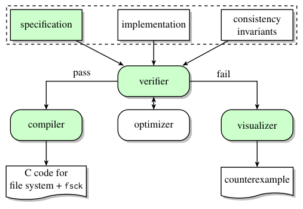
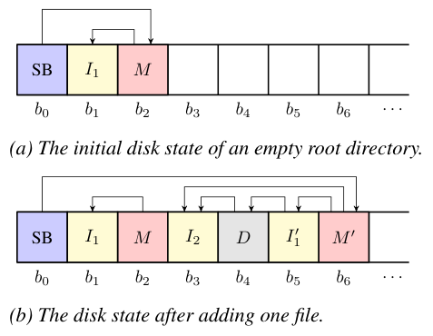
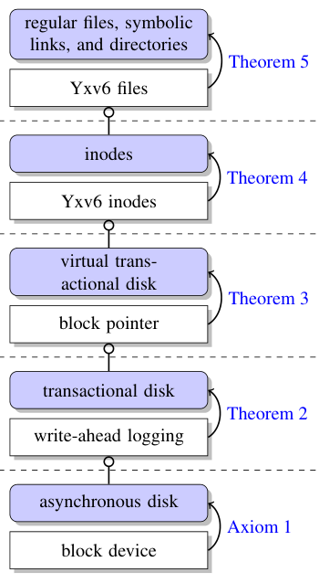
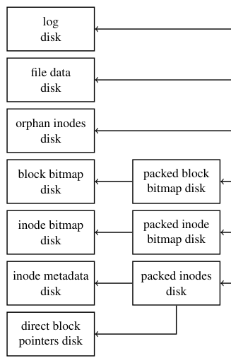
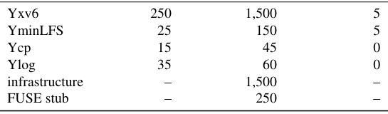
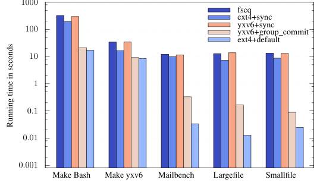
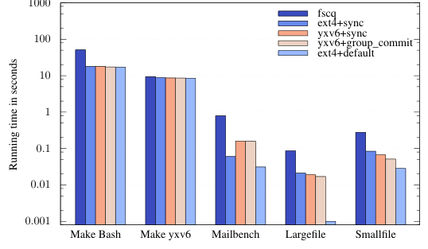

Push-Button Verification of File Systems via Crash Refinement
This page was written by an AI model to give a high-level overview of the paper. Please check the paper for detail: USENIX.
File systems must keep complex on-disk data structures consistent even when the machine crashes mid-write or the disk cache reorders writes. Getting this right is hard, and bugs in widely used file systems have caused real data loss. The natural response is formal verification, but prior verified file systems paid for their correctness with enormous manual effort: proving two operations of the BilbyFS file system in Coq took 9.25 person-months and 13,000 lines of proof for 1,350 lines of code, and verifying the FSCQ file system took 1.5 years and produced a proof roughly ten times the size of xv6, an unverified file system with similar features.
That effort is manual because interactive theorem provers such as Coq or Isabelle require the programmer to write the proof alongside the code. The underlying reasoning problem is also genuinely hard to automate: a file system's behavior depends on arbitrarily long sequences of operations, each operation has many execution paths, and crashes and disk-cache reordering add non-determinism about exactly which writes reached stable storage before a crash. Tools that automate reasoning about file systems, such as model checkers, have therefore settled for finding bugs rather than proving their absence.
Yggdrasil's key idea is a new definition of file system correctness, crash refinement, chosen specifically because it can be checked fully automatically. Crash refinement says an implementation is correct with respect to a specification if every disk state the implementation can produce, including every state reachable by crashing at an arbitrary point and reordering cached writes, is equivalent to some state the specification could have produced. Because this property only quantifies over a finite crash schedule and finite-domain program state, it falls into a decidable fragment of first-order logic that a satisfiability modulo theories (SMT) solver can check directly, with no human-supplied proof.
In practice, a programmer gives Yggdrasil three inputs, all written in a restricted subset of Python: a specification of intended behavior, an implementation, and consistency invariants that say when an on-disk image is well-formed. Yggdrasil symbolically executes both specification and implementation, encodes the crash refinement obligation as an SMT formula, and asks the Z3 solver to prove it. A failed proof yields a concrete counterexample trace, visualized as the pending and synchronized writes around the crash point, which is how the tool caught two bugs in the authors' own first attempt at a toy file system. Crash refinement also composes: an implementation can be verified against a specification one layer at a time, and each layer's specification (not its implementation) is reused by the layer above, which is what let the authors scale from a toy example to a full journaling file system.
Using Yggdrasil, the authors built and verified Yxv6, a journaling file system resembling xv6 and FSCQ, plus a file-copy utility (Ycp) and a persistent log (Ylog) modeled on the Arrakis operating system; comparing Ylog to Arrakis's own log turned up two real bugs in Arrakis's crash recovery, later confirmed by its developers. Yxv6 passed the fsstress and SibylFS POSIX conformance test suites, verified in under a minute (the synchronous variant) to under two hours on 24 cores (the group-commit variant), and ran 3 to 150 times faster than FSCQ while staying within 10x of ext4's default configuration, across five benchmarks on both an SSD and a RAM disk.

Key takeaways
- Crash refinement: an implementation is correct if every disk state it can produce (including crash and reordering states) is equivalent to some state its specification could produce. Unlike simple bisimulation, this accounts for non-determinism from crashes and disk-cache reordering.
- Push-button: the programmer writes a specification, an implementation, and consistency invariants, all in a restricted Python; no manual proof annotations. Z3 checks crash refinement via symbolic execution and SMT, and emits a concrete counterexample trace on failure.
- Layered, modular proofs: Yxv6 is built as five stacked layers (disk, transactional disk, virtual transactional disk, inodes, files), each proved a crash refinement of the layer below, so SMT reasoning never has to span the whole system at once.
- Built and verified Yxv6 (with a group-commit variant), Ycp, and Ylog; comparing Ylog to the Arrakis persistent log found two real recovery bugs, confirmed by Arrakis's developers.
- Yxv6 passed fsstress and SibylFS POSIX conformance tests, verified in seconds to under two hours, and ran 3 to 150x faster than FSCQ while staying within 10x of ext4's default configuration.
From a correctness definition to a verified, compiled file system
What makes file system verification hard, how crash refinement is defined and checked, and how Yggdrasil scales it up to a real journaling file system.
1 · Why file systems are hard to verify
A file system operation can touch many on-disk data structures, and the disk itself adds non-determinism: writes sit in a volatile cache and can be reordered until a flush, and a crash can happen at any point, leaving an arbitrary prefix of pending writes applied. Exhaustively exploring all execution paths against all possible disk states and all crash points is intractable in general. Prior verified file systems sidestepped this by asking the programmer to hand-write a correctness proof in an interactive theorem prover: BilbyFS's proof (in COGENT) took 9.25 person-months for two operations, and FSCQ's proof (in Coq) took 1.5 years and produced a proof about ten times the size of a comparable unverified file system, xv6. Bug-finding tools such as EXPLODE and FiSC automate reasoning but only search for counterexamples; they cannot certify that none exist.
2 · Defining crash refinement
Yggdrasil models both the specification and the implementation as state machines whose operations are functions f(s, x, b) of the current state s, an external input x, and a crash schedule b, a set of booleans recording which writes completed and which were flushed to stable storage before a crash. The definition is built in stages:
- Crash-free equivalence. With no crash (b = true everywhere), the specification f0 and implementation f1 must map equivalent, consistent starting states to equivalent, consistent ending states, for every input.
- Crash refinement without recovery. For every crash schedule b1 the implementation might experience, there must exist some schedule b0 such that the specification's result under b0 is equivalent to the implementation's result under b1. The implementation may crash in more ways, but every resulting state must still be explainable by the specification.
- Recovery idempotence. A recovery routine r, run on reboot, must produce the same result however many times it is interrupted and re-run: r(s, true) = r(r(s, b), true) for any schedule b.
- Crash refinement with recovery. Combines the above: f0 and f1 are crash-free equivalent, r is idempotent, and for every b1 there is a b0 such that f0's result is equivalent to r applied to f1's result.
- No-ops. A background operation (e.g., garbage collection) that does not change externally visible state after recovery is treated as a no-op and need not match any specification operation one-for-one.
- System crash refinement. An implementation F1 is a crash refinement of a specification F0 if every operation of F1, combined with its recovery routine, is either a crash refinement of the corresponding operation of F0 or a no-op.
3 · Checking it automatically: symbolic execution and SMT
Yggdrasil's verifier symbolically executes each operation to obtain an SMT encoding of f(s, x, b) for symbolic state, input, and crash schedule, representing disk state as an uninterpreted function from a block address and in-block offset to a 64-bit value. It then asks Z3 to prove the crash refinement formula by checking that its negation is unsatisfiable. If Z3 instead finds the formula's negation satisfiable, the resulting model is a concrete counterexample: states s0 and s1, an input x, and a schedule b1 for which no specification schedule b0 produces an equivalent result. Loops and recursion are unrolled without a depth bound ("self-finitizing" symbolic execution), which requires implementations to be written so that every execution path is finite.
4 · Reading a counterexample
For the asynchronous disk model, the visualizer turns a counterexample model into a concrete event trace: it uses the crash schedule to find where execution stopped and reports a source-code stack trace for that point, then lists the writes still sitting in the cache (unsynchronized) alongside their source locations. This is how the authors diagnosed a missing-flush bug in a draft of their example file system, YminLFS: the trace showed that an inode-mapping block's write was still pending while the superblock write that pointed to it had already reached disk, which would corrupt the file system on a crash in between.
5 · Worked example: a toy log-structured file system

YminLFS is a minimal log-structured file system (no segments, subdirectories, or garbage collection) used to illustrate the whole flow. Its specification is an abstract map from inode numbers to metadata and directory entries, with a well-formedness invariant tying parent and child maps together. Its implementation never overwrites existing blocks (except the superblock); creating a file writes a new inode, an updated directory data block, an updated inode block, a new inode-mapping block, and finally the superblock, each separated by a disk flush in the first, naive version. Consistency invariants constrain the superblock's counters and pointers, the inode-mapping block's ranges, and the root directory's entries. The verifier caught two bugs in the first draft (one in lookup, one in data layout) in seconds, and then proved the fixed version correct in under 30 seconds.
6 · Scaling up: stacking layers of abstraction

A toy file system can be verified in one shot, but Yxv6 is too complex for that. Crash refinement is transitive and composable, so Yxv6 is built as five layers, each with its own specification and implementation, where an upper layer's implementation is written against a lower layer's specification rather than its implementation: (1) an asynchronous block device, trusted by axiom to refine the asynchronous disk specification; (2) a transactional disk, implemented with write-ahead logging over several lower disks; (3) a virtual transactional disk with 64-bit virtual addresses, implemented with block pointers and a free-block bitmap; (4) inodes, implemented by partitioning the virtual address space into per-inode ranges; (5) files, directories, and symbolic links, implemented on top of inodes with separate bitmap and orphan-inode disks. Each layer is proved a crash refinement of the one below it (Theorems 2 through 5), so the SMT solver only ever reasons about one layer at a time.
7 · Using multiple disks to help the solver, then merging them

Within each layer, Yxv6 deliberately uses several separate logical disks (e.g., one for the free-space bitmap, one for inode metadata, one for data) because the SMT solver can then easily see that an update to one disk cannot affect another, which keeps the per-layer proofs tractable. This produces a seven-disk file system that is correct but impractical. The paper then proves, as a separate crash refinement step, that packing these seven disks into non-overlapping partitions of one physical disk, with space-efficient bitmaps and inode tables instead of one bit or inode per block, is itself a crash refinement (Theorem 6): a denser packed disk has no more reachable states than the sparse one it replaces, and a single disk's flush affects all partitions atomically, which only removes possible behaviors.
8 · Relaxing crash consistency for performance
The layered design above, Yxv6+sync, commits a transaction (and flushes) on every system call, which is slow. Yxv6+group_commit instead batches many system calls into one transaction, flushing only when the in-memory log fills or on an explicit fsync, following the classic group-commit technique. The paper proves this optimized variant is a crash refinement of Yxv6+sync (Theorem 7): a single combined transaction cannot expose more intermediate states than two separate transactions could, since the latter could always crash between them. See the Evaluation tab for what this buys in practice.
9 · Keeping operations finite: validation instead of verification
The self-finitizing symbolic executor requires every operation to terminate without a depth bound, which breaks for two kinds of code: search procedures (e.g., scanning a bitmap for a free block or an entry in a directory), which may need to touch arbitrarily many blocks, and unlink, which may need to free arbitrarily many data blocks. Yxv6 handles both by narrowing what must be verified:
- For searches, an unverified search algorithm proposes an index, and a small, verified validator checks that the index is actually free before using it, failing with an error otherwise; the solver never has to reason about the search's many paths.
- For unlink, the implementation moves the file's inode to a finite, verified operation (adding it to an orphan-inode list) and defers reclaiming its data blocks to a separate garbage collector, which is proved to be a no-op since it does not change externally visible state.
10 · Toolkit and trusted computing base
Programmers write specifications, implementations, and invariants in a restricted subset of Python; Yggdrasil's symbolic executor supports regular control flow, booleans, fixed-width integers, and maps and lists of concrete length, but not exceptions, coroutines, or symbolic calls into C libraries. Once verified, an optional built-in optimizer (e.g., greedily removing redundant disk flushes) rewrites the implementation and the result is re-verified from scratch, so the optimizer itself need not be trusted. Verified code is compiled to C via the Cython compiler and linked against a small FUSE bridge to produce a runnable, single-threaded user-space file system plus an fsck-style checker generated from the consistency invariants. The trusted computing base is the specification, the verifier, the visualizer, the compiler, and their dependencies (Z3, Python, gcc), plus FUSE and the Linux kernel; it does not include the optimizer. Yggdrasil only reasons about single-threaded code; concurrent file systems are out of scope.
Evaluation
What the paper measures about proof effort, run-time performance, verification time, and correctness, mainly through Yxv6 as the representative case study.
All experiments ran on a 4.0 GHz quad-core Intel i7-4790K running Linux 4.4.0, except the group-commit verification timing, which also used a 24-core 2.2 GHz Intel Xeon machine. Run-time benchmarks were measured on both a Samsung 850 Pro SSD and a RAM disk, to separate storage latency from CPU overhead.
| What | Value in the paper |
|---|---|
| Platform | 4.0 GHz quad-core Intel i7-4790K, Linux 4.4.0; verification timing also run on 24-core 2.2 GHz Intel Xeon |
| Storage | Samsung 850 Pro SSD, and a RAM disk to isolate CPU-bound overhead |
| Workloads | Five benchmarks from FSCQ's suite: compiling bash, compiling Yxv6, a mail server from sv6 (Mailbench), and the Largefile and Smallfile LFS benchmarks |
| Systems compared | Yxv6+sync, Yxv6+group_commit, FSCQ, ext4+default (data=ordered), ext4+sync (data=journal+sync); xv6 excluded as it crashed on three benchmarks and failed fsstress |
| Correctness tests | fsstress (Linux Test Project), SibylFS POSIX conformance tests, Ferrite's disk block enumerator for crash-consistency cross-checking, and manual disk corruption against the generated fsck |
| Metrics | Total running time (seconds, log scale), verification time (seconds to hours), and lines of code |
Push-button verification keeps proof artifacts small

What it shows. Lines of code (excluding blank lines and comments) for each component: Yxv6's specification is 250 lines and its implementation 1,500 lines, with 5 consistency invariants; YminLFS is 25/150 lines with 5 invariants; Ycp is 15/45 lines with no invariants; Ylog is 35/60 lines with no invariants. Shared infrastructure adds about 1,500 lines and the FUSE stub about 250 lines, for roughly 4,000 lines of Python in total across the toolkit and all four systems.
What to take from it. There is no separate proof script to count: the specification and consistency invariants are the entire verification burden beyond the implementation itself. This is the paper's main point of contrast with Coq-based FSCQ (1.5 years of proof effort, about 10x the code of unverified xv6) and COGENT-based BilbyFS (9.25 person-months and 13,000 lines of proof for 1,350 lines of code), though the comparison is across different systems and feature sets, not a controlled study.
Group commit makes Yxv6 competitive on an SSD

What it shows. Total running time (seconds, log scale, lower is better) for five benchmarks (Make Bash, Make Yxv6, Mailbench, Largefile, Smallfile) on an SSD, for FSCQ, ext4+sync, Yxv6+sync, Yxv6+group_commit, and ext4+default. Yxv6+sync performs similarly to FSCQ and to ext4's slower (fully synchronous) configuration. Yxv6+group_commit, which batches multiple operations per transaction, outperforms FSCQ and ext4+sync by 3 to 150x and is on average within 10x of ext4's default configuration.
What to take from it. The gap between Yxv6+sync and Yxv6+group_commit is the measured effect of the crash consistency relaxation proved safe in Theorem 7 (How It Works, §8): the same verified design, under a less conservative flush policy, moves from FSCQ-like performance to within an order of magnitude of a mature, unverified production file system.
On a RAM disk, Yxv6's CPU overhead is close to ext4's

What it shows. The same five benchmarks and systems, run on a RAM disk to isolate CPU overhead from storage latency. Yxv6+sync and Yxv6+group_commit perform similarly to each other, both outperform FSCQ, and both are close to ext4 except on the Largefile benchmark.
What to take from it. The paper attributes Yxv6's edge over FSCQ here to Yggdrasil's Python-to-C compilation (via Cython), versus FSCQ's Haskell code extracted from Coq proofs. Since storage latency is removed, this isolates compiled code quality rather than the on-disk design, and it is presented as a plausible explanation rather than a verified root cause.
Verification finishes in minutes to hours, not months, and is robust across solver versions
| System / check | Time |
|---|---|
| Yxv6+sync, full crash refinement proof | under 1 minute (single core) |
| Yxv6+group_commit, full crash refinement proof | 1.6 hours on 24 cores; about 36 hours on a single core |
| Cross-check across Z3 versions | 1,417 buildable Git snapshots over three years, no inconsistent results |
| Cross-check across solvers | Boolector and MathSAT 5 used alongside Z3, no inconsistent results |
| FSCQ proof checking in Coq, for comparison | 11 hours |
What it shows. Yxv6+group_commit takes longer to verify than Yxv6+sync because it is parameterized with a much larger transaction size limit (511 vs. 10 writes), which the paper gives as the reason for the slowdown. The paper also reports running the identical Yxv6 verification against 1,417 different Z3 snapshots and against two other SMT solvers as a check on solver correctness, since Z3 sits in the trusted computing base.
What to take from it. Even the slower, 24-core group-commit proof is far faster than the 11 hours FSCQ's authors report just to check an already-written Coq proof, let alone the 1.5 years to write it, which supports the paper's claim that automating the proof (rather than only automating optimization or testing) is what removes the bulk of the manual effort. The multi-solver, multi-version cross-check is evidence of robustness, not a formal guarantee that Z3 is bug-free.
Testing and comparison against a real system both found bugs
What it shows. Yxv6+sync and Yxv6+group_commit both pass fsstress and the SibylFS POSIX conformance tests, except for features Yxv6 does not implement (hard links, extended attributes). Ferrite's disk block enumerator was used to independently cross-check that post-crash-and-recovery states were consistent. Manually corrupting file system images with random bytes was detected by Yxv6's generated fsck in every case tested. The verifier itself caught two bugs during initial YminLFS development (§2.3) that had not surfaced during testing. Separately, writing Ylog and comparing it line-by-line against the Arrakis persistent log it models surfaced two real bugs in Arrakis's crash recovery: the recovery logic was not idempotent, and recovery could leave garbage data if the system crashed again mid-recovery. Both were reported to and confirmed by Arrakis's developers.
What to take from it. The paper treats these as complementary signals rather than a single proof: the verifier gives a guarantee for Yxv6 itself (modulo the trusted computing base), while re-implementing and verifying Ylog as a specification exercise was what exposed real bugs in an existing, non-verified system (Arrakis), suggesting the methodology has value even for auditing systems that were never going to be rewritten in Yggdrasil.
FAQ
Q·What is "crash refinement," in plain terms?▾
It is a rule for comparing a simple specification to a real implementation when both are exposed to crashes and reordered writes. The implementation is correct if every disk state it could ever end up in, including states left behind by a crash at an arbitrary point, matches some state the specification could have produced under some (possibly different) pattern of crashing. The implementation is allowed to behave differently from the specification internally; it just cannot expose a disk state the specification could never have produced.
Q·Why isn't ordinary bisimulation (matching states step by step) enough?▾
Bisimulation assumes both systems transition in lock step on the same input. But a disk's cache can reorder or delay writes, and a crash can happen at any point, so the specification and implementation do not necessarily see the same sequence of effects even when given the same operation. Crash refinement handles this by quantifying over all possible crash schedules on the implementation side and requiring a matching (not necessarily identical) schedule to exist on the specification side.
Q·How is this different from a model checker or bug-finding tool like EXPLODE?▾
Model checkers such as EXPLODE and FiSC explore concrete executions looking for a violation; if they don't find one, that is evidence of correctness but not a proof, since they may not have explored every path. Yggdrasil instead asks an SMT solver whether a counterexample can exist at all, over symbolic inputs and states. If the solver says no, that is a proof covering every disk up to 2^64 blocks and every trace of operations of any length.
Q·How is this different from FSCQ, which is also a verified file system?▾
FSCQ's correctness is proved by hand in Coq using crash Hoare logic, an extension of Hoare logic with crash conditions; writing that proof took the FSCQ authors about 1.5 years. Yggdrasil instead defines crash refinement so that the entire proof can be discharged automatically by an SMT solver, given only a specification, an implementation, and a handful of consistency invariants (5, for Yxv6), with no manually written proof steps.
Q·Does this support multi-threaded or concurrent file systems?▾
No. Yggdrasil's symbolic execution and crash reasoning assume single-threaded operations. Extending crash refinement to concurrent implementations is explicitly left outside the scope of the paper.
Q·What language do you actually write a Yggdrasil file system in?▾
A restricted subset of Python, used for the specification, the implementation, and the consistency invariants alike. The subset supports concrete and symbolic booleans, fixed-width integers, maps, and lists of bounded length, plus ordinary conditionals and loops, but not exceptions, coroutines, or calls into unverified C code. The verified implementation is later compiled to C via Cython for performance.
Q·What does a counterexample actually tell you?▾
When the SMT solver finds that crash refinement does not hold, it returns a concrete model: specific starting disk states, a specific input, and a specific crash schedule for the implementation for which no matching specification schedule exists. Yggdrasil's visualizer turns this into a trace showing which writes had reached disk ("synchronized") and which were still sitting in the volatile cache ("pending") at the crash point, each annotated with its source code location, which is usually enough to spot a missing flush or a reordering bug directly.
Q·Why does Yxv6 use seven separate logical disks instead of one?▾
Because the SMT solver can reason about disjoint disks independently: if the free-block bitmap, inode metadata, and file data each live on their own disk, the solver can easily see that writing one does not disturb the others, which keeps each layer's proof small. The paper then proves, as a separate crash refinement theorem, that packing all seven disks into dense, non-overlapping partitions of one physical disk preserves correctness, since the packed layout can only produce a subset of the states the sparse, multi-disk layout could.
Q·How does the verifier handle operations that could touch an unbounded number of blocks, like scanning for a free inode?▾
It doesn't try to verify the scan itself. Instead, an unverified search routine proposes an answer (e.g., "block 42 is free"), and a small, verified validator checks that the answer is actually correct before the system acts on it, failing safely otherwise. This is a form of translation validation, and it lets Yggdrasil avoid symbolically executing a loop whose length depends on disk size.
Q·What is left unverified, i.e., what's in the trusted computing base?▾
The file system specification itself, Yggdrasil's verifier, counterexample visualizer, and C compiler, together with their dependencies (the Z3 solver, Python, and gcc), plus FUSE and the Linux kernel. The optional performance optimizer is explicitly not trusted: any code it produces is re-verified from scratch, so a buggy optimization would simply fail verification rather than silently corrupt the file system.
Q·Did building Ylog actually find bugs in an existing system?▾
Yes. Ylog reimplements the persistent log from the Arrakis operating system to the same on-disk layout, and verifying it against a specification requiring idempotent, atomic, immediately-persistent appends surfaced two bugs in Arrakis's own recovery code: non-idempotent recovery, and a possibility of leftover garbage data if the system crashed a second time during recovery. Both were confirmed by the Arrakis developers.
Q·Is "push-button" the same as "fully automatic with zero design effort"?▾
No. The programmer still has to design the on-disk layout, write the specification and implementation, and come up with the right consistency invariants, and the paper notes that most of the remaining effort goes into getting those invariants and the specification right. What push-button removes is the need to write and maintain a separate, manual correctness proof alongside the code.
Q·How much slower is a verified Yxv6 than a mature, unverified file system like ext4?▾
With the group-commit optimization, Yxv6 is on average within 10x of ext4's default configuration across the paper's five benchmarks, and 3 to 150x faster than the verified FSCQ file system. Without group commit (committing a transaction per system call), Yxv6 is roughly comparable to FSCQ and to ext4 run in its slowest, fully synchronous mode.